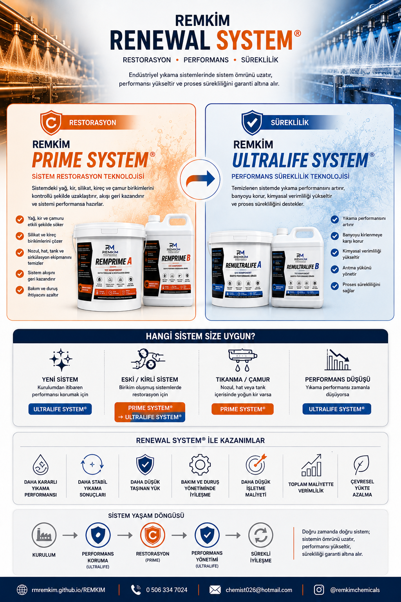

Proses Koşulları
Sıcaklık, süre, mekanik etki ve proses değişkenlerindeki farklılıklar, performans sürekliliğini doğrudan etkileyebilir.
Kararlı proses performansının sürdürülebilirliğini desteklemek amacıyla geliştirilmiş REMKİM Teknoloji Platformu.
REMKİM RENEWAL SYSTEM®, endüstriyel yıkama sistemlerinde sistem restorasyonu, performans yönetimi ve proses sürekliliğini birlikte ele alan çok aşamalı teknoloji yaklaşımıdır.

REMKİM RENEWAL SYSTEM®, kirli ve performans kaybı yaşayan sistemlerin restorasyonundan başlayarak, yüksek performanslı ve kararlı çalışma koşullarının korunmasına kadar uzanan çok aşamalı teknoloji yaklaşımıdır.
Nozul, hat, tank ve sirkülasyon sistemlerinde oluşan yağ, kir, silikat ve kireç birikimlerinin kontrollü şekilde uzaklaştırılması için geliştirilmiş sistem restorasyon teknolojisi.
PRIME SYSTEM® →Temizlik performansının korunması, yıkama suyunun verimli kullanılması ve proses sürekliliğinin desteklenmesi için geliştirilmiş performans yönetim teknolojisi.
ULTRALIFE SYSTEM® →Nozul, hat, tank ve sirkülasyon sistemlerinde yıllar içinde oluşan yağ, kir, silikat, kireç ve eski banyo kalıntılarının kontrollü şekilde uzaklaştırılması için geliştirilmiş sistem restorasyon teknolojisidir.
Yağ, kir, silikat ve kireç yükünün çözülmesini destekleyen performans arttırıcı toz faz.
Çözünen yükün kontrol edilmesini ve sistem kararlılığını destekleyen sıvı faz.
| Uygulama Tipi | Boşta sistem temizliği |
|---|---|
| Çalışma Sıcaklığı | 70–80 °C |
| Uygulama Süresi | 60 dakika |
| Dozaj Yaklaşımı | Sistem hacmi ve kirlilik analizine göre |
| Temizlenen Bölgeler | Nozul, boru, tank, filtre ve sirkülasyon hattı |
Endüstriyel yıkama proseslerinde performans kaybı, çoğu zaman tek bir nedenden değil, birbirini etkileyen birçok proses değişkeninden kaynaklanır. REMKİM Performance Renewal System®, performans kaybını yalnızca kimyasal açıdan değil, tüm proses sistemi içerisinde değerlendirir.
Sıcaklık, süre, mekanik etki ve proses değişkenlerindeki farklılıklar, performans sürekliliğini doğrudan etkileyebilir.
Kimyasal sistem içerisindeki denge değişimleri, yıkama performansının zaman içerisinde farklılaşmasına neden olabilir.
Kimyasal, enerji, su ve zaman gibi proses kaynaklarının kontrolsüz kullanımı, performans kayıplarına neden olabilir.
Performansın sürdürülebilirliği, yalnızca doğru ürün seçimine değil; prosesin sistematik olarak yönetilmesine bağlıdır.
Performance Renewal System®, proses performansını yalnızca sonuçlara göre değil; analitik veriler doğrultusunda değerlendirilen sistematik bir mühendislik yaklaşımıyla ele alır. Her karar, ölçülebilir ve doğrulanabilir verilere dayanır.
Performance Renewal System®, endüstriyel yıkama proseslerinde performans kaybını azaltmak, proses kararlılığını desteklemek ve kaynak verimliliğini iyileştirmek amacıyla geliştirilmiş bir REMKİM teknoloji platformudur.
REMULTRALIFE®, Performance Renewal System® teknoloji platformu kapsamında geliştirilen performans teknolojisi ailesidir. Platform içerisinde yer alan teknoloji modülleri farklı görevler üstlenir. Her modül kendi fonksiyonunu yerine getirirken, birlikte çalışarak proses performansının desteklenmesine, korunmasına ve sürdürülebilir şekilde yönetilmesine katkı sağlar.
Her teknoloji kendi görevini yerine getirir. Proses performansı ise sistemin analiz edilmesi, değerlendirilmesi, planlanması ve yönetilmesiyle sağlanır.
Proses performansının desteklenmesine yönelik teknoloji modülü.
Proses kararlılığının korunmasına yönelik teknoloji modülü.
Performance Renewal System®, proses koşullarına bağlı olarak aşağıdaki hedeflerin desteklenmesine yönelik sistematik bir yaklaşım sunar.
Yıkama performansındaki dalgalanmaların azaltılmasına katkı sağlar.
Kimyasal, enerji, su ve zaman kullanımının daha kontrollü yönetilmesini destekler.
Beklenmeyen performans kayıplarının azaltılmasına yönelik yaklaşım sunar.
Kararların ölçülebilir proses verileri doğrultusunda alınmasını destekler.
Performance Renewal System®, aynı amaç için çalışan farklı proseslerde, prosese özel analiz ve değerlendirme yaklaşımıyla uygulanabilir.
Performance Renewal System®, endüstriyel yıkama proseslerinde performans kaybını azaltmak, proses kararlılığını desteklemek ve kaynak verimliliğini iyileştirmek amacıyla geliştirilmiş sistematik bir REMKİM teknoloji platformudur.
Her proses kendi çalışma koşulları içerisinde değerlendirilir. Çünkü aynı amaç için uygulanan hiçbir proses, başka bir prosesin aynısı değildir.
Her teknoloji kendi görevini yerine getirir. Gerçek proses performansı ise analiz, değerlendirme, planlama ve doğru teknoloji platformlarının birlikte uygulanmasıyla sürdürülebilir hale gelir.
Performansın analiz edilmesi, geliştirilmesi ve sürdürülebilirliğinin yönetilmesine yönelik teknoloji platformu.
REMKİM Process Analysis Method® ile proseslerin sistematik olarak analiz edilmesini sağlayan metodoloji.
Kimyasal performansın desteklenmesi, proses kararlılığının korunması ve banyo ömrünün yönetilmesine yönelik teknoloji modülü.
Sistem durumuna göre doğru fazın seçilmesi, restorasyon ve performans yönetiminin en verimli şekilde uygulanmasını sağlar.
| Sistem Durumu | Önerilen Faz |
|---|---|
| Yeni makine / temiz sistem | ULTRALIFE SYSTEM® |
| Uzun süre kullanılan sistem | PRIME SYSTEM® |
| Nozul / sprey tıkanması | PRIME SYSTEM® |
| Silikat ve kireç birikimi | PRIME SYSTEM® |
| Banyo performansının korunması | ULTRALIFE SYSTEM® |
| Kimyasal verimliliğinin artırılması | ULTRALIFE SYSTEM® |
| Restorasyon sonrası çalışma dönemi | ULTRALIFE SYSTEM® |